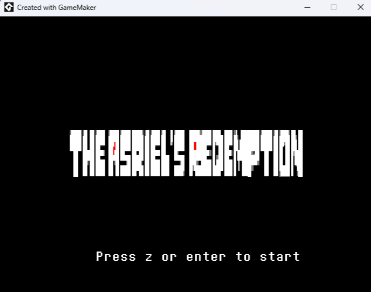

Hola!, soc Alejandro, un xiquet que disfruta programar i crear videojocs quan tinc temps lliure.
Soc molt fan de Undertale i Deltarune, fets per Toby Fox i també m'agrada crear musica per als meus jocs
utilitzant FL Studio.
Tinc experiencia en:
El Stack de Programació web
Unity + C#
GameMaker Studio + GML
FL Studio
BlockBench (3D)
Disseny de videojocs amb narrativa
RPG Maker
Vull Aprendre:
Unity Avançat
Desenvolupament de jocs online
React
Desenvolupament de videojocs 3D
Modelatge 3D
Teoria Musical
Projectes:
BackRooms: Survive, és un joc que estic desenvolupant en conjunt amb un amic meu
està inspirat en el mon dels espais liminals i està en una fase de desenvolupant molt temprana
Undertale: The Asriel Redemption, un Fangame (joc no oficial fet per fans) del joc Undertale,
que vaig tindre que retirar per problemes de drets amb Toby (per la disquera, no per toby)

Un bot de WhatsApp que no vaig terminar, fet amb JavaScript
Les meves xarxes